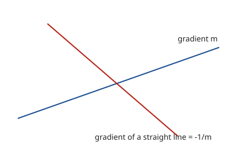

Based on Cambridge International AS & A Level Mathematics: Pure Mathematics 1 Coursebook (Sue Pemberton), Chapter 3, printed pp.75–78 (parallel and perpendicular lines). Printed pages were read from P1.pdf (printed 75–78 = PDF 87–90). Own wording and new numbers. Teaching stops before 3.3 Equations of straight lines on printed p.78.
Key words: gradient of a straight line, parallel lines, perpendicular lines
Parallel lines never meet, and the gradient of a straight line is the same for both. If two lines are perpendicular and one has gradient \(m\), then the other has gradient \(-\dfrac{1}{m}\). Equivalently, if the gradients are \(m_1\) and \(m_2\), then \(m_1 m_2=-1\).

Book: Key point 3.2–3.3 style, printed pp.75–78. New numbers.
A line has gradient \(1\). What is the gradient of a straight line perpendicular to it?
Book: a line parallel to a given line. New numbers.
Find the gradient of a straight line parallel to \(y=5x-3\).
Find the gradient of a straight line parallel to \(y=5x-3\).
\(5\)
The product of the gradients of two perpendicular lines is required. What is that product?
\(-1\)
A line has gradient \(1\). What is the gradient of a straight line perpendicular to it?
\(-1\)
9709/13/M/J/15 Question 7(ii) only, 4 marks. Official QP and MS. Part (i) is in P1-3.1. The opening sentence of Question 7 is repeated so that (ii) is self-contained.
The point \(A\) has coordinates \((p, 1)\) and the point \(B\) has coordinates \((9, 3p + 1)\), where \(p\) is a constant.
(ii) For the case in which the line with equation \(2x + 3y = 9\) is perpendicular to \(AB\), find the value of \(p\). [4]